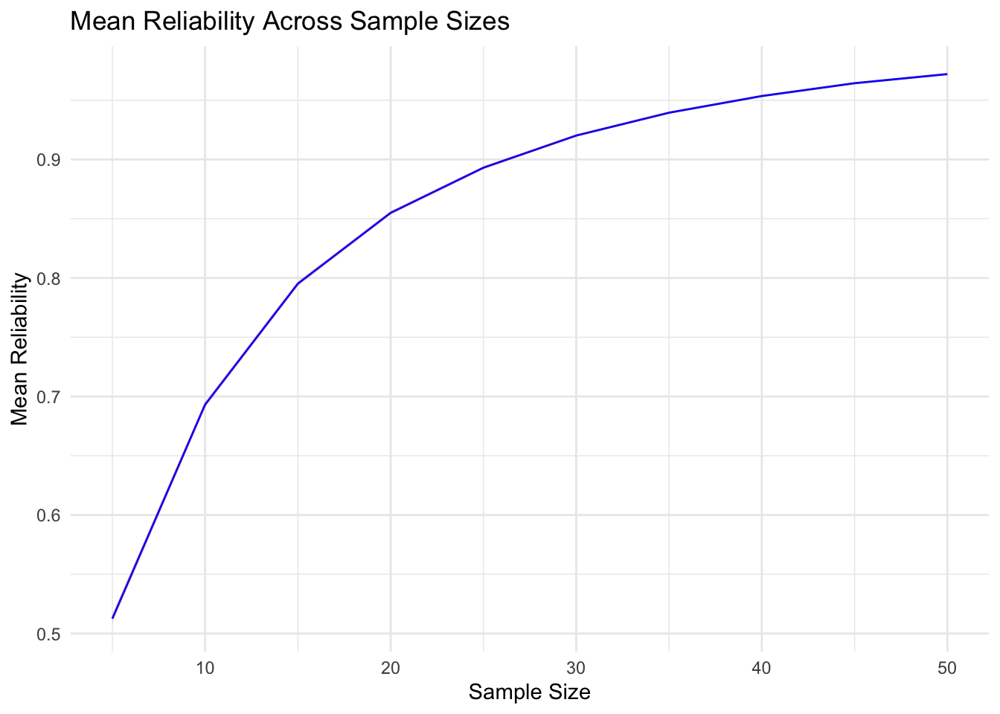
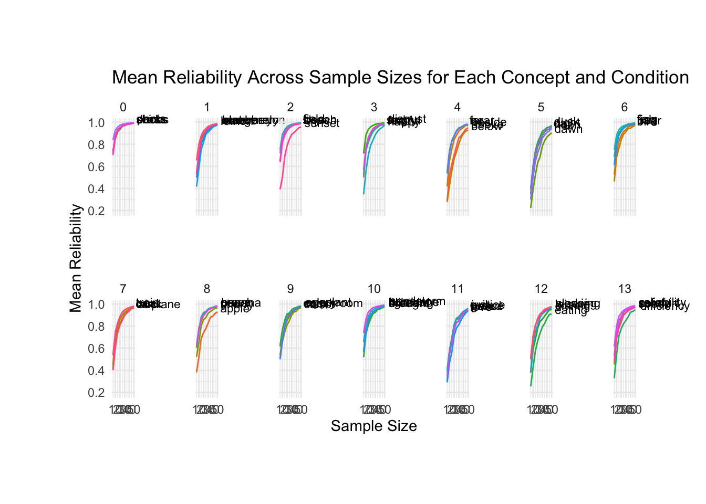

# List of packages
packages <- c("corrr", "ggplot2", "lme4", "lmerTest", "FactoMineR", "grid","png","cowplot","magick", "ggimage","dplyr","tidyverse","knitr")exp1
Load packages
install_and_load_packages <- function(packages) {
for(package in packages) {
if(!require(package, character.only = TRUE)) {
install.packages(package, dependencies = TRUE)
library(package, character.only = TRUE)
}
}
}
# Call the function with the list of packages
install_and_load_packages(packages)Loading required package: corrrLoading required package: ggplot2Loading required package: lme4Loading required package: MatrixLoading required package: lmerTest
Attaching package: 'lmerTest'The following object is masked from 'package:lme4':
lmerThe following object is masked from 'package:stats':
stepLoading required package: FactoMineRLoading required package: gridLoading required package: pngLoading required package: cowplotLoading required package: magickWarning: package 'magick' was built under R version 4.3.3Linking to ImageMagick 6.9.12.93
Enabled features: cairo, fontconfig, freetype, heic, lcms, pango, raw, rsvg, webp
Disabled features: fftw, ghostscript, x11Loading required package: ggimage
Attaching package: 'ggimage'The following object is masked from 'package:cowplot':
theme_nothingLoading required package: dplyr
Attaching package: 'dplyr'The following objects are masked from 'package:stats':
filter, lagThe following objects are masked from 'package:base':
intersect, setdiff, setequal, unionLoading required package: tidyverse── Attaching core tidyverse packages ──────────────────────── tidyverse 2.0.0 ──
✔ forcats 1.0.0 ✔ stringr 1.5.0
✔ lubridate 1.9.3 ✔ tibble 3.2.1
✔ purrr 1.0.1 ✔ tidyr 1.3.0
✔ readr 2.1.5
── Conflicts ────────────────────────────────────────── tidyverse_conflicts() ──
✖ tidyr::expand() masks Matrix::expand()
✖ dplyr::filter() masks stats::filter()
✖ dplyr::lag() masks stats::lag()
✖ tidyr::pack() masks Matrix::pack()
✖ lubridate::stamp() masks cowplot::stamp()
✖ tidyr::unpack() masks Matrix::unpack()
ℹ Use the conflicted package (<http://conflicted.r-lib.org/>) to force all conflicts to become errors
Loading required package: knitrWarning: package 'knitr' was built under R version 4.3.3knitr::opts_chunk$set(echo = TRUE, warning = FALSE, message = FALSE)Set working directories
current_dir<- getwd()
data_dir <-paste0(current_dir,'/../data/')
data_files <-list.files(path = data_dir, full.names = TRUE, pattern="*.csv")
print(paste0('we have data from ',length(data_files),' participants'))[1] "we have data from 305 participants"Load in data and filter our texture ids
df_list <- lapply(data_files, read.csv)
experiment_data_raw<- bind_rows(df_list)
ratings_trials<- experiment_data_raw %>% filter(trial_type== 'html-slider-response')
ratings_trials_exp<- ratings_trials %>% filter(practiceTrial != 'true')
ratings_trials_exp$response<- as.numeric(ratings_trials_exp$response)
ratings_trials_exp$response<- (ratings_trials_exp$response + 200)/400
extract_texture_id<-function(filename){
f<- str_split_i(filename,"/",2)
f<- str_split_i(f,".png",1)
return(f)
}
ratings_trials_exp$texture <- lapply(ratings_trials_exp$texture_id,extract_texture_id)
unique_sona_ids <- unique(ratings_trials_exp$sona_id)
cat(paste(unique_sona_ids, collapse = ", "))89029, 87953, 89549, 90874, 88280, 88325, 89328, 88912, 88348, 87436, 88922, 87775, 89702, 89445, 86220, 89438, 88208, 88948, 87093, 89738, 90072, 89521, 87264, 87357, 90828, 87946, 87260, 90187, 89351, 87314, 90067, 88213, 87959, 88420, 89932, 88409, 87678, 90871, 90278, 88901, 87397, 87916, 90065, 87814, 88490, 87701, 89818, 89723, 89769, 89430, 89790, 87690, 87345, 88290, 89462, 89533, 90842, 87884, 89036, 89283, 87173, 88956, 87346, 90059, 88812, 87928, 88395, 87828, 89799, 90148, 89464, 89024, 88824, 87108, 87824, 87932, 87077, 89547, 89321, 89567, 87223, 89447, 89350, 90035, 88417, 88364, 89285, 89031, 87858, 89709, 87675, 87111, 90184, 89008, 87871, 89297, 87438, 87773, 85618, 90883, 88928, 88464, 87888, 89894, 87386, 89516, 90554, 87822, 90481, 86200, 87103, 88471, 87206, 87265, 88502, 89425, 89895, 88505, 90212, 90186, 90887, 87735, 87904, 89515, 87943, 89344, 89957, 90182, 87067, 90052, 87408, 90205, 90604, 88860, 87261, 88874, 87349, 88211, 87760, 87069, 89605, 87165, 89304, 87098, 89772, 89741, 88203, 87280, 90155, 87153, 89629, 88321, 88829, 90063, 89940, 90177, 89374, 89938, 87115, 89803, 88200, 87320, 88892, 87396, 89922, 88310, 88946, 89392, 87188, 88882, 88945, 89380, 89626, 87185, 88182, 89952, 88256, 88509, 90894, 87792, 88251, 89292, 89796, 90843, 87107, 88171, 89465, 88533, 87838, 88429, 90353, 88272, 87125, 88893, 89601, 88782, 88271, 87066, 89828, 87954, 87266, 90880, 87934, 88387, 89783, 88439, 87682, 88411, 87896, 89402, 87063, 87392, 88535, 90044, 89596, 88473, 89962, 89530, 89953, 89822, 89805, 89963, 88465, 88805, 89903, 89920, 89466, 88524, 88250, 87771, 88958, 89449, 87171, 90214, 89033, 87764, 85669, 87855, 90074, 88451, 87708, 87766, 88808, 89773, 89440, 89613, 89042, 90465, 87834, 89403, 87210, 87070, 87145, 87687, 90620, 87868, 87872, 87253, 87810, 89012, 89417, 87246, 89568, 89010, 88861, 89479, 89575, 87662, 87833, 88891, 90031, 90174, 88943, 88333, 89397, 88885, 87852, 87931, 89942, 87204, 89435, 87250, 88237, 90881, 87131, 89422, 87252, 87820, 89627, 89331, 89386, 90033, 87901, 90893, 87957, 88780t<-ratings_trials_exp %>%
group_by(condition_num) %>%
summarise(unique_subjects = n_distinct(subject_id))
concept_groups <- ratings_trials_exp %>%
select(concept, condition_num) %>%
distinct() %>%
arrange(condition_num)Group and pivot into a concept x texture matrix
ratings_trial_grouped <- ratings_trials_exp %>% group_by(texture, concept) %>%summarise(mean_rating = mean(response))
ratings_trials_grouped_wide<-ratings_trial_grouped %>%
pivot_wider(names_from = texture, values_from = mean_rating)
ratings_trials_grouped_wide# A tibble: 70 × 54
concept D18 D79 D19 D4 D82 D66 D92 D48 D105 D35 D8
<chr> <dbl> <dbl> <dbl> <dbl> <dbl> <dbl> <dbl> <dbl> <dbl> <dbl> <dbl>
1 above 0.549 0.516 0.528 0.558 0.508 0.533 0.503 0.434 0.509 0.443 0.497
2 airplane 0.474 0.387 0.350 0.409 0.436 0.387 0.446 0.390 0.417 0.415 0.453
3 angry 0.567 0.405 0.702 0.683 0.542 0.582 0.694 0.476 0.367 0.473 0.540
4 apple 0.296 0.347 0.331 0.357 0.290 0.464 0.316 0.480 0.356 0.311 0.374
5 banana 0.319 0.448 0.373 0.356 0.389 0.284 0.314 0.284 0.480 0.272 0.290
6 beach 0.502 0.391 0.409 0.582 0.427 0.465 0.545 0.391 0.429 0.407 0.255
7 bear 0.391 0.476 0.437 0.445 0.456 0.244 0.453 0.214 0.459 0.297 0.31
8 below 0.447 0.455 0.431 0.426 0.461 0.456 0.423 0.461 0.451 0.439 0.423
9 beside 0.539 0.463 0.421 0.375 0.422 0.508 0.440 0.543 0.488 0.511 0.567
10 bird 0.365 0.492 0.442 0.332 0.411 0.376 0.471 0.296 0.442 0.409 0.351
# ℹ 60 more rows
# ℹ 42 more variables: D52 <dbl>, D56 <dbl>, D51 <dbl>, D104 <dbl>, D94 <dbl>,
# D14 <dbl>, D103 <dbl>, D101 <dbl>, D25 <dbl>, D74 <dbl>, D68 <dbl>,
# D81 <dbl>, D76 <dbl>, D17 <dbl>, D84 <dbl>, D87 <dbl>, D34 <dbl>,
# D47 <dbl>, D83 <dbl>, D22 <dbl>, D11 <dbl>, D36 <dbl>, D96 <dbl>,
# D49 <dbl>, D46 <dbl>, D53 <dbl>, D95 <dbl>, D26 <dbl>, D16 <dbl>,
# D75 <dbl>, D57 <dbl>, D102 <dbl>, D65 <dbl>, D77 <dbl>, D1 <dbl>, …### compute matrix rank
SVD <- svd(ratings_trials_grouped_wide[,2:ncol(ratings_trials_grouped_wide)])$d > 1e-10
mat_rank <- sum(SVD)
print(mat_rank)[1] 53bootstrap_associations_matrices<- function(ratings_df, sample_size){
group1ids<- ratings_df %>%
group_by(condition_num) %>%
sample_n(sample_size,replace = TRUE)%>%select(subject_id)
group2ids <- ratings_df %>%
# filter(!subject_id %in% group1ids$subject_id) %>%
group_by(condition_num) %>%
sample_n(sample_size, replace = TRUE) %>%
select(subject_id)
group1df<-ratings_df%>%filter(subject_id%in%group1ids$subject_id)
group2df<-ratings_df%>%filter(subject_id%in%group2ids$subject_id)
group1mat<- group1df%>% group_by(texture, concept) %>%summarise(mean_rating = mean(response),.groups='keep')%>%
pivot_wider(names_from = texture, values_from = mean_rating)
group2mat<- group2df%>% group_by(texture, concept) %>%summarise(mean_rating = mean(response),.groups='keep')%>%
pivot_wider(names_from = texture, values_from = mean_rating)
concept_names <- group1mat$concept # Preserve concept names in correct order for later
group1mat <- group1mat[order(group1mat$concept), -1] # Remove concept column
group2mat <- group2mat[order(group2mat$concept), -1] # Remove concept column
common_columns <- intersect(colnames(group1mat), colnames(group2mat)) # Find common columns
group1mat <- group1mat[, sort(common_columns)]
group2mat <- group2mat[, sort(common_columns)]
### @Anna lol could you just change things below so that we compute concept-wise correlations and return a dataframe of correlations for each concept
### @Kushin lol yes. I changed things so that the function returns a list with both the mean_correlation and the correlation_df (the correlation_df specifies the correlation value for each concept)
rowwise_correlations <- mapply(function(row1, row2) {
cor(row1, row2, use = "pairwise.complete.obs")
}, as.data.frame(t(group1mat)), as.data.frame(t(group2mat)))
# Create dataframe of concept-wise correlations
correlation_df <- data.frame(
concept = concept_names,
correlation = rowwise_correlations
)
# Compute mean correlation
mean_correlation <- mean(rowwise_correlations, na.rm = TRUE)
return(list(mean_correlation = mean_correlation, correlation_df = correlation_df))
}### @Kushin I updated the running code so that it works as before with the updated function
iters<-numeric()
sample_sizes<-numeric()
mean_rs<-numeric()
correlation_dfs<-list()
for(iter in 1:100){
for(sample_size in seq(5, 50, by = 5)){
result <- bootstrap_associations_matrices(ratings_trials_exp, sample_size)
mean_rs <- rbind(mean_rs, result$mean_correlation)
correlation_dfs[[length(correlation_dfs) + 1]] <- result$correlation_df
iters<- rbind(iters, iter)
sample_sizes<-rbind(sample_sizes, sample_size)
}
}
bootstrap_df <- data.frame(cbind( iters,sample_sizes,mean_rs
))
colnames(bootstrap_df)<- c('iteration','sample_size','mean_reliability')
# Summarize data to calculate mean and standard error for each sample_size
summary_results <-bootstrap_df %>%
group_by(sample_size) %>%
summarise(
se_reliability = sd(mean_reliability, na.rm = TRUE) / sqrt(n()),
mean_reliability = mean(mean_reliability, na.rm = TRUE),
)
# Create ggplots
ggplot(summary_results, aes(x = sample_size, y = mean_reliability)) +
geom_line(color = "blue") +
geom_ribbon(aes(ymin = mean_reliability - se_reliability,
ymax = mean_reliability + se_reliability),
alpha = 0.1, fill = "red") +
labs(
title = "Mean Reliability Across Sample Sizes",
x = "Sample Size",
y = "Mean Reliability"
) +
theme_minimal()
# Now plots for individual concepts
# Combine all correlation data frames into one with iteration and sample size info
correlation_summary_df <- bind_rows(
lapply(seq_along(correlation_dfs), function(i) {
cbind(
iteration = iters[i],
sample_size = sample_sizes[i],
correlation_dfs[[i]]
)
})
)
# Summarize data for each concept and sample size
summary_correlation_results <- correlation_summary_df %>%
group_by(concept, sample_size) %>%
summarise(
mean_correlation = mean(correlation, na.rm = TRUE),
se_correlation = sd(correlation, na.rm = TRUE) / sqrt(n()),
.groups = "drop"
)
# Add condition_num
summary_correlation_results <- left_join(summary_correlation_results, concept_groups, by = "concept") %>%
arrange(condition_num)
#OLD Incorrect
# # Convert list of correlation_dfs to single data frame
# concept_correlation_data <- do.call(rbind, correlation_dfs)
#
# # Add sample sizes and iterations to the correlation data
# concept_correlation_data$sample_size <- rep(seq(5, 100, by = 5), each = 50 * length(concept_groups$concept))
# concept_correlation_data$iteration <- rep(1:100, times = length(seq(5, 50, by = 5)) * length(concept_groups$concept))
#
# # Add condition_num
# concept_correlation_data <- left_join(concept_correlation_data, concept_groups, by = "concept") %>%
# arrange(condition_num)
#
# # Summarize data for plotting: mean reliability and standard error per concept, condition_num, and sample_size
# summary_concept_results <- concept_correlation_data %>%
# group_by(sample_size, condition_num, concept) %>%
# summarise(
# se_reliability = sd(correlation, na.rm = TRUE) / sqrt(n()),
# mean_reliability = mean(correlation, na.rm = TRUE)
# )
# Plot
# # Custom Colors
# # Define your custom color palette
# custom_colors <- c(
# "Concept1" = "#1f77b4", # Blue
# "Concept2" = "#ff7f0e", # Orange
# "Concept3" = "#2ca02c", # Green
# "Concept4" = "#d62728", # Red
# "Concept5" = "#9467bd" # Purple
# )
#ggplot
ggplot(summary_correlation_results, aes(x = sample_size, y = mean_correlation, color = concept)) +
geom_line() +
geom_ribbon(aes(ymin = mean_correlation - se_correlation, ymax = mean_correlation + se_correlation, group = concept),
alpha = 0.1, fill = "red", color = NA) +
geom_text(
data = summary_correlation_results %>%
group_by(condition_num, concept) %>%
filter(sample_size == max(sample_size)), # Place label at the largest sample size
aes(
x = sample_size,
y = mean_correlation,
label = concept
),
hjust = -0.1, # Slightly offset the labels horizontally
vjust = 0, # Adjust vertical spacing
size = 3,
inherit.aes = FALSE # Avoid inheriting other plot aesthetics
) +
labs(
title = "Mean Reliability Across Sample Sizes for Each Concept and Condition",
x = "Sample Size",
y = "Mean Reliability"
) +
theme_minimal() +
facet_wrap(~ condition_num, ncol = 7) +
theme(
legend.position = "none",
plot.margin = margin(50, 50, 50, 50),
panel.spacing = unit(3, "lines")) +
#scale_color_manual(values = custom_colors) +
coord_cartesian(clip = "off")